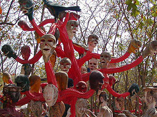

アユタヤ郊外にある素敵過ぎる寺、
ワットガイ。

機械仕掛けのお猿さんワールドや
珍妙なコンクリ像が目白押しの珍寺である。

てな訳で、お待ちかね
地獄コーナーへと歩を進めましょう。
まず現れるのは閻魔サマの裁き。
日本や中国では閻魔大王のみならず十人の王たちがそれぞれ裁判を行う
十審制を取り入れているが、今までタイで見てきた限りでは裁判は1回、一発勝負のようで緊張感がハンパない（というほどでもないけど）。
大体こんな感じ↑のお方が判決を述べている。左右に
司命と司録を従えているところは東アジアの十王制との共通点として見逃せない。
ここの亡者たちの身体は基本暗めのつや消しモスグリーン。
子供の頃、戦車プラモでよくお世話になった
タミヤカラーを髣髴とさせる色使い。
さあ、裁きの後はいよいよ地獄の責め苦ガーデンのはじまりはじまり～。
それぞれ課せられた宿題を一生懸命こなしております。
お約束の
地獄鍋。盛大にやってます。

鍋の傍らには舌と乳が伸び放題伸びちゃったオババが沈みかかった亡者に飴のサービス…か？
隣の鍋では職人肌のおっさんが
スープの仕込みを真剣に行ってました。チョット格好イイぞ。
地獄のファイアウォール。脱走しようとする輩はセキュリティががっちりガード！
んで十字架に吊るされちゃいます。
ん？スパンブリの
ワットプラロイでも見たねえ、コレ。
動物化人間を片っ端から捌きまくりですね。
こ、コレは痛そう…
共食い？
ホンモノのサボテンを植えてあるところに作り手の
無慈悲なセンスが。
大川栄作？（あ、若い衆には判りませんね…)
これが本当のクロスカウンターパ～ンチ。
丸ノコ命中！ショックのあまり下の方も曲がっちゃいました！
いよっ、待ってました！
首なし君。
どどすこすこすこシャブ注入！
目血は辛そうだなぁ。
延髄切り！
トゲトゲの木。ここのは棘のエッジが効いてて
痛そな感がかなり高い。
このトゲトゲの木は浮気をした人、不貞をはたらいた人が落ちる地獄だとか。
木の上に相手の女性がいるのでトゲトゲを我慢して登る。すると今度はまた下に。再び下りると今度は上に。永遠に登ったり降りたりを繰り返しつつ、途中で鳥に突かれるわ、槍でさされるわ。あー大変。「不倫は文化」、なーんてうそぶくく方はサクッとこの地獄に行くのだろうか。
仏陀に救いを求める人達。地獄の敗者復活戦。

そしてココ、ワットガイの地獄も
舌責めへの異様な執着が感じられる。
↓コレなんかはいたってノーマルなプレイです。
舌ハンギングの刑。
変な虫に吸われるの刑。
犬と力比べの刑。
舌がヌンチャクみたいになっちゃってます、の刑。
意味もなく痛そう…、の刑
…と、ここもスパンブリの
ワットプラロイと同じアイテムが多かった。
作風から言って作者は違うようだが、ここまで似ているという事はどちらかがどちらを参考にした、と考えられる。
しかしオッリジナルなアイテム、も存在する。
それが地獄ガーデンの一番奥にあるコレである。
首ツリー。
以前、
ワットパーラックローイで似たようなモノを見かけたことがあるが↓、ここのはさらに大型、そして精緻。

しかもよく見れば幹の一部にはスピーカーが埋め込まれているようだ。
それにしてもこの造形の想像力、如何であろうか？
木の先端に生首、しかも人間のみならず鶏、牛、犬といった動物まで道連れ。
何が言いたいのか何を表しているのかすら判らない、摩訶不思議な
妄想先行型のオブジェといえよう。
素晴らしき地獄のカーテンコールであった。
てな具合でバーチャル地獄ツアーは終了。ご満足いただけましたでしょうか?
境内の片隅にあったトゲトゲの木。
日本の古くから伝わる地獄絵図の中でもこのトゲトゲの木が描かれている事があるのだが、そこは日本らしく
松の木が用いられおり、しっとりと表現されている。
それはそれで痛そうだがこの木に比べたら全然ソフトですね。
地獄だけでなく色々楽しめるお寺だった。
寺の向かいには猿園がある。
コンクリで造られた築山をたくさんの猿が闊歩している。
ちなみに柵や檻で仕切られている訳ではないので猿はお寺の境内や隣の学校など行ったり来たりやりたい放題。
逆に人間様も猿のテリトリーに入っていける。
近づいてみたが人馴れしてるのか、威嚇されることもなく平静だった。
ただしお菓子を持ったチビッコはボコボコにされてましたが…